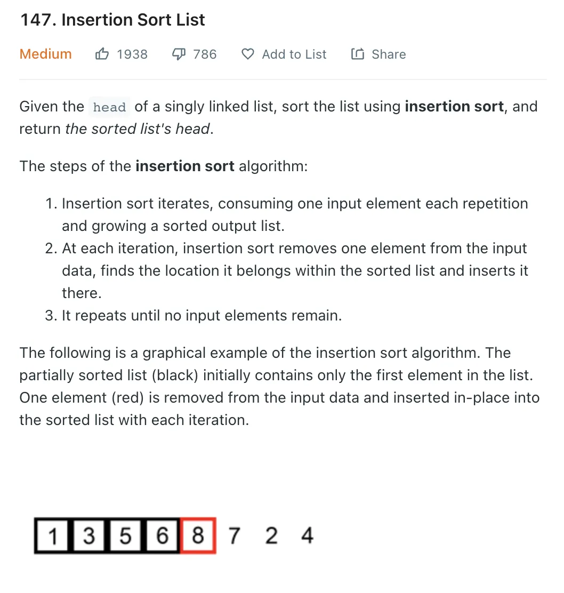

147. Insertion Sort List
Question

✍🏽 My Solution
Runtime: 36 ms, faster than 10.92% of Java online submissions for Insertion Sort List.
Memory Usage: 44.3 MB, less than 70.92% of Java online submissions for Insertion Sort List.
class Solution {
public ListNode insertionSortList(ListNode head) {
if (head == null || head.next == null) return head;
ListNode dummyHead = new ListNode(Integer.MIN_VALUE, null);
ListNode p = head;
ListNode d = dummyHead;
int count = 1;
while (p != null) {
ListNode tmp = p.next;
if (p.val > d.val && count == 1) {
p.next = d.next;
d.next = p;
p = tmp;
count++;
d = dummyHead; // 從頭開始遍歷
} else if (p.val > d.val && d.next == null) { // 大於頭節點，小於next節點
p.next = d.next;
d.next = p;
p = tmp;
d = dummyHead; // 從頭開始遍歷
} else if (p.val > d.val && p.val <= d.next.val) { // 大於頭節點，小於next節點
p.next = d.next;
d.next = p;
p = tmp;
d = dummyHead; // 從頭開始遍歷
} else {
d = d.next;
}
}
return dummyHead.next;
}
}
✍🏽 優化
Runtime: 28 ms, faster than 24.92% of Java online submissions for Insertion Sort List. Memory Usage: 41.8 MB, less than 82.72% of Java online submissions for Insertion Sort List.
class Solution {
public ListNode insertionSortList(ListNode head) {
if (head == null || head.next == null) return head;
ListNode dummyHead = new ListNode(Integer.MIN_VALUE, null);
ListNode p = head;
ListNode d = dummyHead;
while (p != null) {
ListNode tmp = p.next;
d = dummyHead; // 初始化虛擬頭節點
// 尋找p要插入在哪個節點後方
while (d.next != null && p.val >= d.next.val) {
d = d.next;
}
// 插入p節點
p.next = d.next;
d.next = p;
p = tmp;
}
return dummyHead.next;
}
}
🧠 Thought Process
-
Why did I choose this particular implementation?
-
一開始寫法看起來又臭又長，後來參考王爭寫法後（其實思路相同，只是我寫的很多重複代碼）
先找到要插入的點是個節點後面，故一直遍歷 dummy的指針，直到找到插入點
這樣的寫法簡潔很多又好看
-
-
What is the time/space complexity of my solution? How do I know?
- time: 最壞O(n^2) 最好O(n)
- space: O(1)
- What mistakes did I make?
- 沒考慮到 p.val 要插入尾節點的情況，導致nullPointer